前言
第2天课堂笔记
讲师：邵山欢
日期：2017年11月3日
一、作业讲解
开发一个小网站，功能是：
网址/ ，显示对考拉老师的话（别说坏话）。
网址/qian/12321 ，显示人民币一万两千三百二十一块整
网址/riqi/1997/5/8 ，显示这一天是农历丁酉年甲子月甲子年
网址/pinyin/我爱鹿晗 ，显示wǒ ài lù hán
讲一下作业：
第1步，创建package.json文件，使用CMD命令
1 | npm init |
第2步，安装依赖。
这里学习一下，可以用空格隔开所有的依赖的名字，一次性安装多个：
1 | npm install --save nzh solarlunar pinyin |
第3步，写app.js跑一个HelloWorld，验证引包都是正确的，没有少文件。
1 | var http = require("http"); |
第4步，写app.js，得到用户的URL，并且得到里面有用的部分。
这里我们使用一个新的内置模块叫做url，这个url模块有一个parse的方法，可以将url进行分解。
比如url：http://127.0.0.1:3000/qian/123123?haha=2&sex=nan
进行
1 | var url = require("url"); |
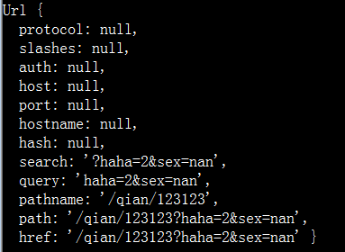
两个东西最有用：
● pathname 就是url的主干部分
● query 就是GET请求的查询参数
进一步的，如果parse函数里面加上第二个参数true，此时参数query将会自动成为对象。
1 | url.parse(req.url , true); |
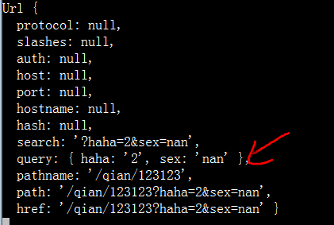
第5步，进行正则模式的匹配。
1 | http.createServer((req,res)=>{ |
第6步，可以将所有的业务放到其他的文件夹中。
1 | var http = require("http"); |
二、淘宝CNPM镜像
淘宝做了一个npm的镜像，叫做cnpm。
官网： npm.taobao.org
特别简单复制下面的程序到CMD中按回车就行了：
1 | npm install -g cnpm --registry=https://registry.npm.taobao.org |
-g安装表示全局安装命令行程序，安装完毕之后，我们就能在CMD中使用cnpm了。
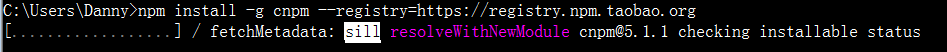
今后使用cnpm命令代替npm命令，比如：
1 | cnpm install --save solarlunar |
三、Express框架
3.1 整体感知
做http服务的时候，不方便：
匹配URL很不方便 if(//.test()){}
使用静态页面不方便 fs.readFile(function(err,data){res.end(data)})
不能静态化一个文件夹，我们想将一个文件夹中的所有文件自动拥有路由，实现不了
……
Express简化了HTTP应用程序的开发。
官网： http://www.expressjs.com.cn/
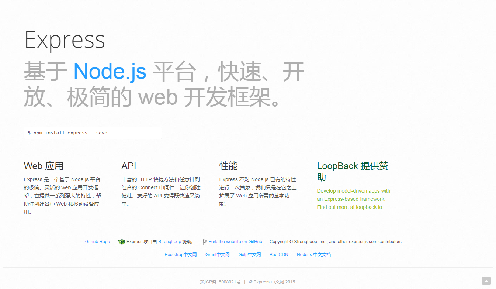
安装依赖：
1 | cnpm intsall --save express |
我们用昨天的作业在express中进行一个演示：
1 | var express = require("express"); |
3.2 创建app和app的监听
我们引入express之后，这个express是一个函数，这个函数可以调用创建出一个app对象。
今后所有的操作都是用app对象来完成，需要注意的是，一个程序中只有一个app。也就是说express不能多次调用。
express程序的基本结构：
1 | var express = require("express"); |
3.3 中间件
3.3.1 动词
中间件的语法：
1 | app.动词("地址" , function(req,res){ |
我们先说动词，它是26种HTTP请求，必须是小写字母：
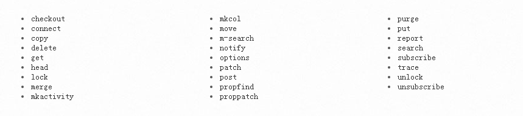
动词表示当用户用这种请求访问这个页面的时候做的事情。
我们现在就可以区分出用GET请求访问首页和POST请求访问首页做不同的事情：
1 | var express = require("express"); |
3.3.2 中间件的路径是自动比对主干部分
路径已经自动被url.parse()了，也就是说express会用用户输入的URL的主干部分来进行比对。
也就是说我的中间件如果是：
1 | app.get("/xinwen" , function(req,res){ |
下面的URL都是合法的能够进入这个频道的：
1 | http://127.0.0.1:3000/xinwen |
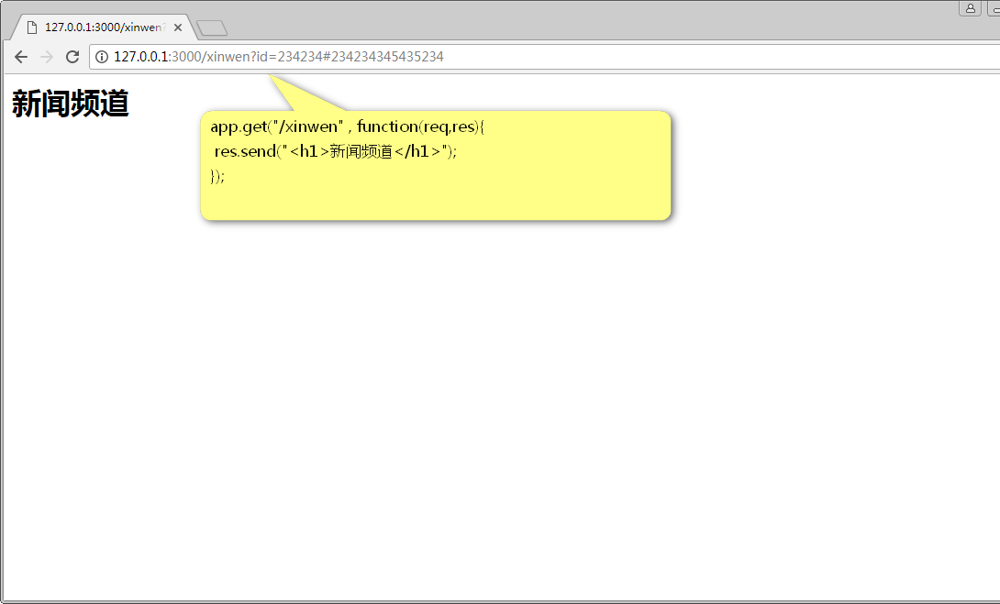
3.3.3 中间件可以有通配符
用:来表示画一个通配，要注意这里没有正则表达式的，在程序中可以通过req.params.***得到它。
1 | app.get("/:banji/:xuehao" , function(req,res){ |
今后的编程就不用写match()和test()方法了。
还有一种*的通配符，没啥用，自己看手册。
3.3.4 中间件的顺序很关键
比如我们输入班级、学号查询学生信息，但是不能查询3班8号。此时一定要注意中间件的顺序。
中间件一旦匹配上的路由，此时不再进行其他匹配。有一种”拦截”的感觉。
1 | app.get("/3/8" , function(req,res){ |
3.3.5 用next()放行拦截
当一个中间件已经匹配了路径，但是自己不希望单独处理这次请求，可以用next来放行。
我们做一个业务能够查询学生或者老师的信息，不管查询什么都要增加计数器的数量。此时可以单独用一个中间件写计数器，放行请求即可：
1 | app.get("/chaxun/*" , function(req,res,next){ |
3.4 输出
● 输出可以用res.send()做输出，会自动加上utf-8。
1 | app.get("/" , function(req,res){ |
● 如果输出的内容是一个JSON，此时要用res.json()来进行输出。
1 | app.get("/" , function(req,res){ |
● 如果输出的内容是一个JSONP，此时要用res.jsonp()来输出，此时它会自动检测callback的GET请求，并且加上圆括号的调用。
1 | app.get("/" , function(req,res){ |
复习一下jQuery中的jsonp跨域：
1 | $.ajax({ |
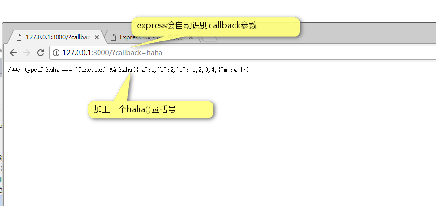
● 如果输出的是一个外置页面，此时要用sendFile()这个API，注意这里必须要用绝对路径，此时我们用__dirname来进行一个拼合。
1 | app.get("/" , function(req,res){ |
● 如果想要跳转页面，用res.redirect()即可
1 | app.get("/" , function(req,res){ |
复习：
res.send()
res.sendFile()
res.json()
res.jsonp()
res.redirect()
3.5 静态化一个文件夹
如果我们想让某文件夹中的所有文件自动拥有路由，此时非常简单，一句话即可：
1 | app.use(express.static("public")); |
此时将把public文件夹进行静态化。
1 | ┣ app.js |
我们在app.js中静态化public文件夹：
1 | var express = require("express"); |
此时：
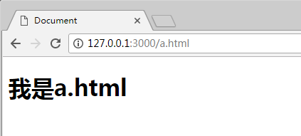
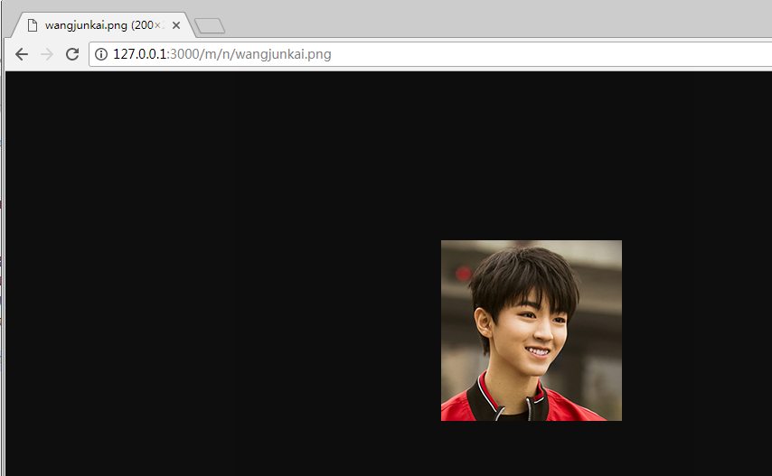
更进一步，如果我们不希望静态的文件夹出现在底层，而是在URL中体现public的名字，此时可用：
1 | app.use("/public" , express.static("public")); |
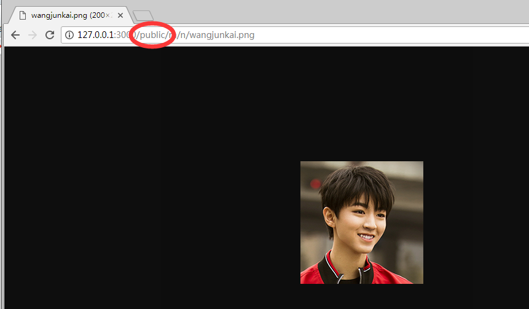
四、Express中的GET请求和POST请求参数的获得
4.1 GET请求参数的获得
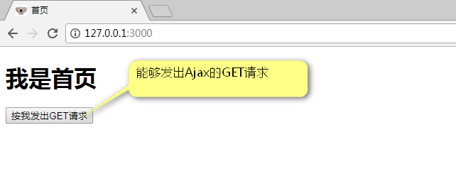
GET请求参数的识别实际上就是URL地址的解析。URL解析使用内置的url模块的parse方法即可。
1 | var url = require("url"); |
4.2 POST请求参数的获得
POST请求的参数携带在上行报文的报文体中。
我们使用npm包formidable来识别这样的上行报文。
API：https://www.npmjs.com/package/formidable
安装依赖：
1 | cnpm intsall formidable --save |
后台app.js识别POST请求需要使用formidable这个包。
1 | var formidable = require('formidable'); |
总结一下两种请求后台怎么得到参数（伪代码）：
GET请求
1 | var url = require("url"); |
POST请求
1 | var formidable = require("formidable"); |
4.3 其他请求
一共有26种请求，注意只有GET请求是通过URL缀?参数来传递参数的。其他的25种请求，都是通过上行报文来传参数的。formidable能够识别其他25种请求的参数。
先说一下jQuery如何发出DELETE请求：
1 | $("#btn3").click(function(){ |
我们的Express这样识别它：（你会发现和POST请求的处理方法是一样的，都是formidable）：
1 | //识别DELETE请求 |
总结一下：
GET请求
1 | var url = require("url"); |
其他请求
1 | var formidable = require("formidable"); |
4.4 RESTful风格路由
注意这个单词的写法：RESTful。REST是Representational State Transfer。
RESTful风格的路由很简单，指的是用URL表示操作的资源，用HTTP动词表示何种操作。
不是RESTful风格的路由：
| 事儿 | 处理这个事儿的URL |
|---|---|
| 增加一个学生 | http://127.0.0.1/addStudent.php |
| 删除一个学号为10086的学生 | http://127.0.0.1/removeStudent.php?id=10086 |
| 修改一个学号为10086的学生的性别 | http://127.0.0.1/updateStudent.php?id=10086&sex=男 |
| 列出所有学生 | http://127.0.0.1/allStudent.php |
RESTful风格的路由
| 事儿 | 处理这个事儿的URL |
|---|---|
| 增加一个学生 | http://127.0.0.1/student （POST） |
| 删除一个学号为10086的学生 | http://127.0.0.1/student/10086 （DELETE） |
| 修改一个学号为10086的学生的性别 | http://127.0.0.1/student/10086 （PATCH） |
| 列出所有学生 | http://127.0.0.1/student （GET） |
五、做一个RESTful风格路由的TodoList
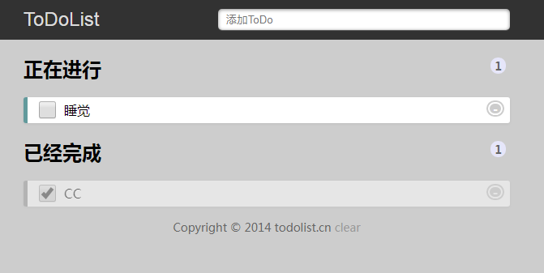
创建身份证，1
npm init
安装依赖
1 | cnpm install --save express formidable |
先从做一个模拟数据库开始（事实上，第三节课就要学习MongoDB和mongoose）。
创建db文件夹创建db.js文件：
1 | [ |
创建models文件夹，里面创建todo.js的文件。
[这个js文件暴露所有能够操作db.js数据库文件的函数，所有对db的操作必须找它！]
[这个js文件不是中间件，和http的服务没有关系，这个文件做的是最脏最累的底层的活儿，看不清楚和全局的关系，这个js文件可以单独的进行单元测试]。
nodejs中内置了一个叫做path的模块，里面提供了resolve()的函数，可以智能合并__dirname和层级路径。
1 | var fs = require("fs"); |
这个todo.js的全貌：
1 | var fs = require("fs"); |
写app.js主文件，主要是静态化www文件夹。
1 | var express = require("express"); |
接口：就是没有界面的数据，通常是JSON或者JSONP形式。